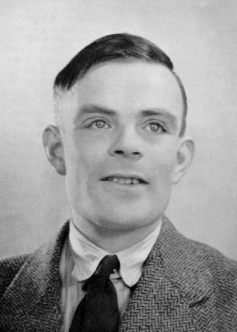

Alan Turing
Naturalidade: Inglaterra
Nascimento: 23/06/1912
Fama: Turing foi um matemático cientista da computação, lógico, criptoanalista, filósofo e biólogo teórico britânico. Turing foi altamente influente no desenvolvimento da moderna ciência da computação teórica, proporcionando uma formalização dos conceitos de algoritmo e computação com a máquina de Turing, que pode ser considerada um modelo de um computador de uso geral. Ele é amplamente considerado o pai da ciência da computação teórica e da inteligência artificial. Apesar dessas realizações ele nunca foi totalmente reconhecido em seu país de origem durante sua vida por ser homossexual e porque grande parte de seu trabalho foi coberto pela Lei de Segredos Oficiais.